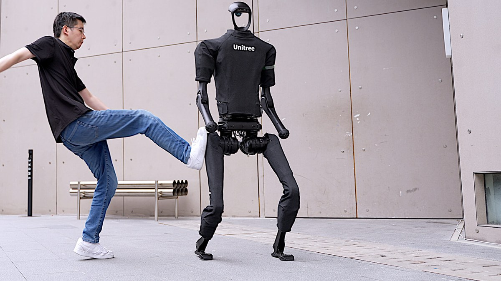

Perceptron · robot AI model
Mk1
United States · 2026
Sources retrieved: 14 October 2026 (B) · 16 October 2026 (C) · 19 October 2026 (A)
- Model type
- Embodied reasoningSource and note: Model typeB perceptron.inc/blog/introducing-perceptron-mk1 · Retrieved 14 October 2026Note. Developer wording: “Mk1 is a frontier embodied reasoning model.”
- Inputs
- Camera Language Audio Mk1.5Varies by versionSource and note: InputsA perceptron.inc/blog/introducing-perceptron-mk1-5 · Retrieved 19 October 2026Note. Mk1 launch post: Mk1 “reasons over multiple camera streams jointly”; it also takes video and text prompts. Video and images = camera, text = language. Mk1.5 launch post: “Mk1.5 ingests text, images, video, and audio”. Audio = audio.
- Access
- API onlySource and note: AccessB perceptron.inc/blog/introducing-perceptron-mk1 · Retrieved 14 October 2026Note. Launch post: “Mk1 is available today via the Perceptron Platform and our updated SDK.” Getting started lists the “API Model ID: perceptron-mk1”.
- Licence type
- PaidSource and note: Licence typeB perceptron.inc/blog/introducing-perceptron-mk1 · Retrieved 14 October 2026Note. “while achieving lower cost than Gemini Flash Lite” Launch post: the post also lists a price per million input and output tokens (amounts not recorded).

Specifications
5 of 14 stated 9 not stated
5 fields hidden 4 not-stated fields with a note stay ·
How to read the figuresShow guideClose
- not statedNo source
- 0Reported as zero
- ASource
- VersionsDiffers between versions
Select a source marker for source details and notes.
Release1/1 disclosed
Input and output2/4 disclosed
Versions
- Mk1
- Camera Language
- Mk1.5
- Camera Language Audio
Size and speed0/2 disclosed
Where it runs and what it is built on0/2 disclosed
Openness2/3 disclosed
The developer’s own claims0/2 disclosed
Versions
- Mk1
- Mk1.5
The developer has released this model in several versions. Each figure applies to the version its source names.
Notes
Perceptron describes Mk1 as a model purpose-built for video understanding and embodied reasoning.
Perceptron released Mk1 on 12 May 2026.
Perceptron lists Bellevue, Washington as the location of its robotics and engineering roles on its About page.
Perceptron's terms of use are governed by the laws of the State of Washington.
Perceptron describes Mk1.5 as a model built to control embodied agents.
Perceptron released Mk1.5 on 25 September 2026.
Sources
One line per source, not per figure: a source has one retrieval date.
- Aperceptron.inc/blog/introducing-perceptron-mk1-5Retrieved 19 October 2026
- Bperceptron.inc/blog/introducing-perceptron-mk1Main source. Retrieved 14 October 2026
- Cperceptron.inc/blog/introducing-perceptron-mk1Retrieved 16 October 2026